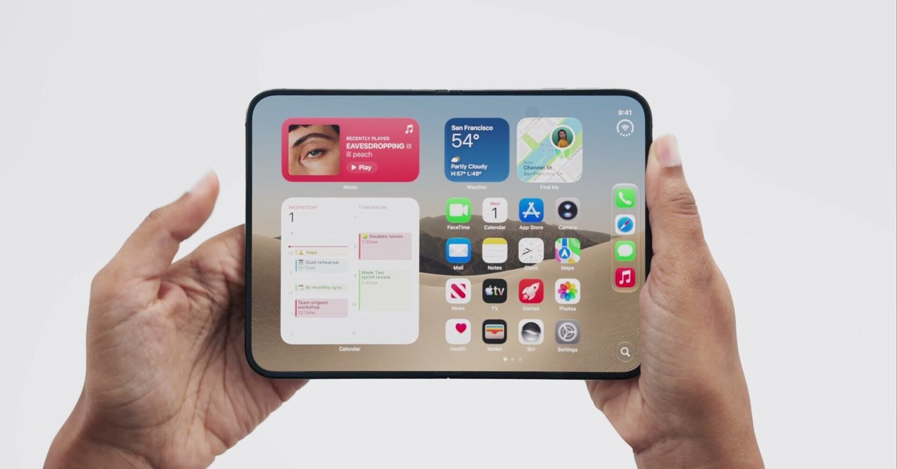
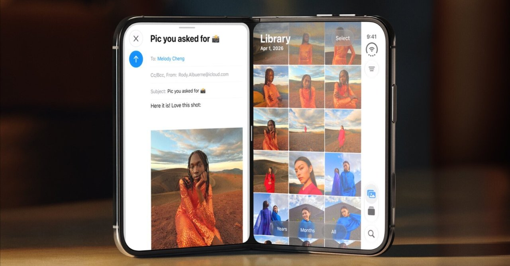
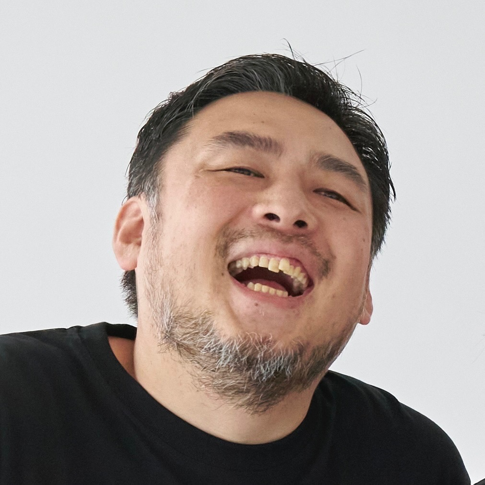

エディトリアル・パートナーとは
エディトリアル・パートナーは、経営者や個人事業主に伴走する「発信活動のパートナー」です。
プロの編集者があなたの顧問となり、発信にまつわる活動をサポートします。
まとまった文章や企画書などを準備していただく必要はありません。1週間に1時間だけお時間をいただければ企画、構成、執筆までこちらで進行します。
エディトリアル・パートナー
エディトリアル・パートナーは、
経営者や個人事業主に伴走する
「発信のパートナー」です。
エディトリアル・パートナーは、経営者や個人事業主に伴走する「発信活動のパートナー」です。
プロの編集者があなたの顧問となり、発信にまつわる活動をサポートします。
まとまった文章や企画書などを準備していただく必要はありません。1週間に1時間だけお時間をいただければ企画、構成、執筆までこちらで進行します。
編集者としてこれまで、さまざまな書き手や経営者と向き合ってきました。
そこで感じた発信が続かない一番の原因は、「経験や専門性はあるが、自分にとって当たり前すぎて伝える価値が分からない」という書き手と読み手の価値観の差分にあるということです。
エディトリアル・パートナーはあなたに代わって単に手を動かすだけではなく、1人目の読者としてその差分を正しく捉えるところから始めます。

note UIデザイナー視点で見る「iPhone Duo」｜Nob NUKUI | THE GUILD note.com/nobtaka
note 活用されなかった「iPadOSの努力」。DuoはなぜiOSを選んだのか？｜Nob NUKUI | THE GUILD note.com/nobtakaソフトウェアデザイン会社「株式会社Super LuckyBoy Company」の代表・貫井伸隆さんに、エディトリアル・パートナーを活用いただきました。

貫井まじでありがたいし、こちらはインタビューに答えるだけなのが非常に楽。
AIには代替え効かないコンテキストの理解などが推しポイント。
山本くん自身の人となりも話しやすくてよかった。
対応できます。ただし、最初は1人あたりのエンゲージメントが高いnoteやX記事などの長文の発信をおすすめしています。動画は「話し方」「撮り方」「企画性」など、向き合う指標が複雑になるため、まずは長文で自分と向き合う時間を大切にしたいと考えています。長文を経てから動画を始めるのが、時代やアルゴリズムに左右されないチャンネルにする進め方だと考えています。
気にしないでください。パートナーが一緒になって探します。最近やった仕事、休みの日の過ごし方、買おうか迷っている物や恋愛相談など、他愛もない話にもあなたらしさは必ず詰まっています。
順序立てて話す必要はありません。質問に答えながら、具体的な出来事や考えを少しずつ共有していただければ大丈夫です。手元のメモや資料も使えます。
対応できますが、なるべく個人名義のアカウントをおすすめしています。ご本人の経験や考えをもとに原稿を作り、内容と表現を確認いただきます。編集協力の表記などは、掲載先の方針も踏まえて事前に相談します。
はい、可能です。原稿やメモを見せていただき、どこを残し、どこを掘り下げるとよいかを考えます。
必須ではありません。こちらから強要したり、推奨することは一切いたしません。
もちろん問題ありません。お話いただいた内容をもとに作るので、話しきれなかったことや、ニュアンスのずれは起きます。修正・加筆はむしろ大歓迎です。
すべてご本人に帰属します。制作物の著作権も料金に含まれており、公開後パートナー側は一切の著作権を所有いたしません。
制作補助に使う場合があります。主な用途は、対話データを読みやすくする処理と、仕上げた記事の誤字や脱字のチェックです。
使用するAI・ツールは、入力した情報を再学習しないよう設定します。取材内容や未公開資料の扱い、利用できないツールなどに条件がある場合は、着手前に確認し、その条件に合わせて進めます。
ご本人の言葉で語ったことをもとに書き上げ、公開するかどうかの最終判断はご本人にしていただきます。意図しない表現や、知らない間の公開が起きないよう配慮しています。私たちは、制作で時間がかかる「最初の形づくり」を伴走しながら手伝うもので、すべての権利はご本人にあります。代行を使っている事実だけで読者を騙すことではないと考えます。制作に関わった者を明確にするため、編集協力としてクレジットを入れていただくのはまったく問題ありません。
1996年生まれ。テックメディア「ギズモード・ジャパン」の編集者として入社後、動画事業の立ち上げなどを経て独立。2021年〜フリー編集者・動画ディレクター。